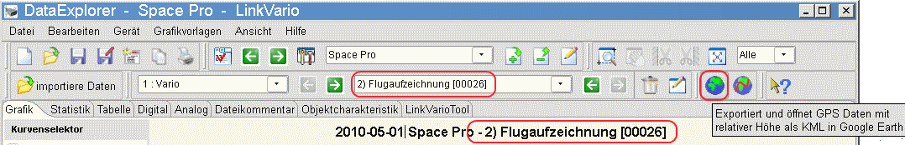
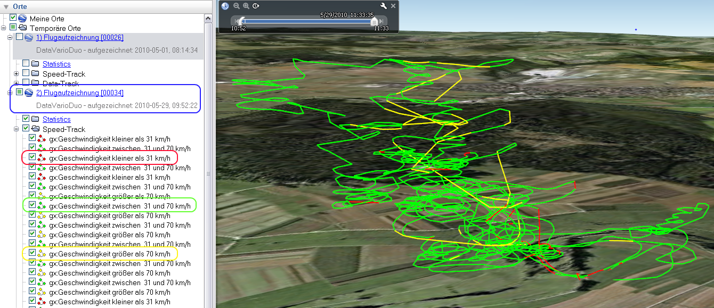
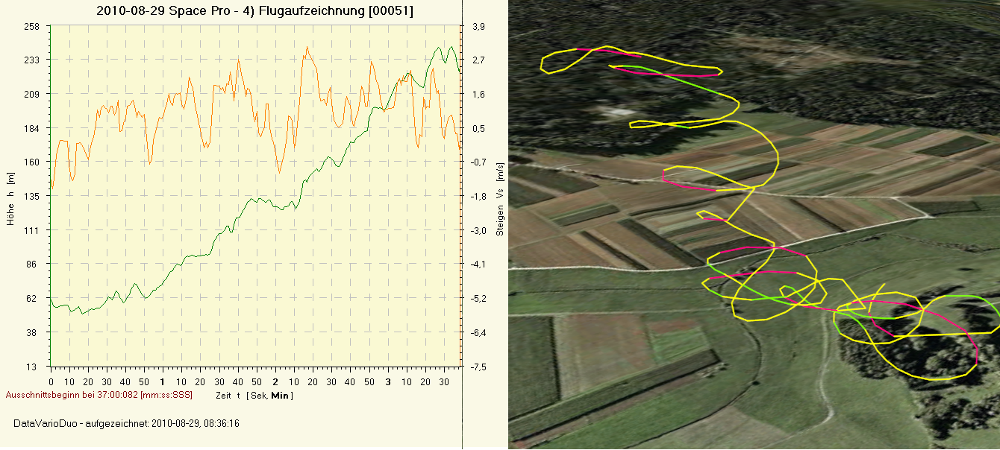
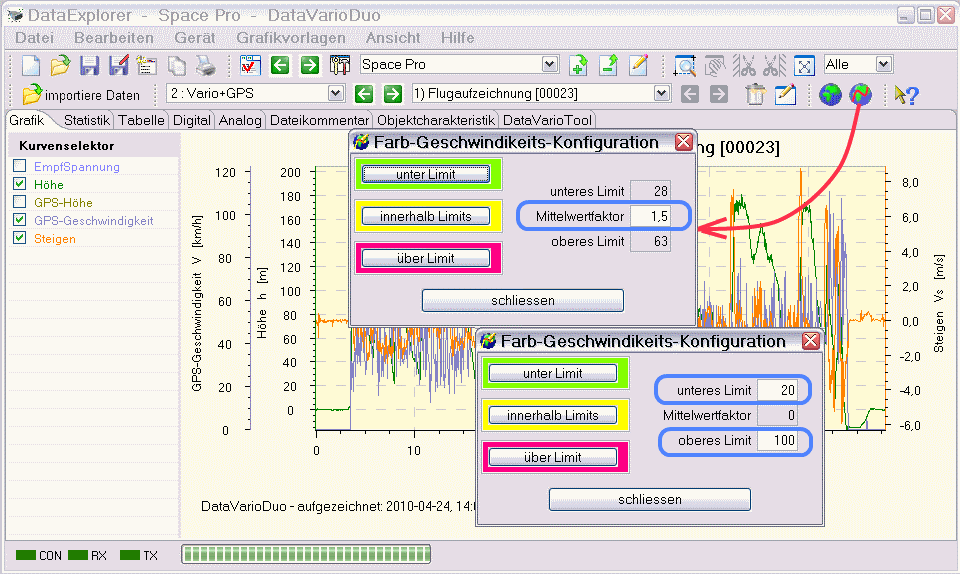
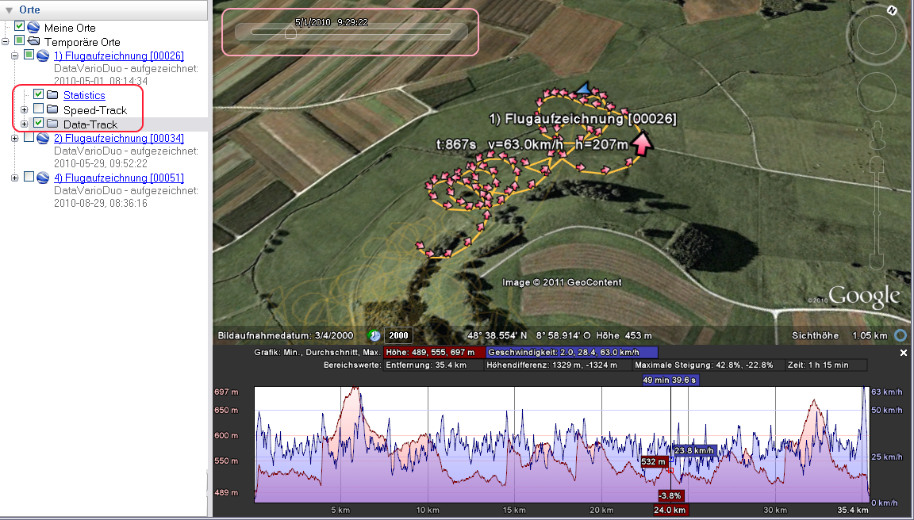

Wenn der gerade angezeigte Datensatz Global Positioning System (GPS)-Daten enthält ist es möglich daraus eine KMZ-Datei zu exportieren und mit der Google Earth Anwendung anzuzeigen. Der Globusknopf in der Toolbar verändert sein Aussehen und signalisiert damit, ob diese Funktion möglich ist.

Hinweis: Dateien, die über den Globusknopf der Toolbar exportiert und angezeigt werden, landen im temporären Ordner des Dateisystems und werden beim Schliessen der Anwendung gelöscht. Möchte man diese Dateien aber behalten, sollte man den gerade angesehen Ausschnitt über die Menübar - "Export/KMZ3D" in eine Datei an einem beliebigen Platz im Dateisystem sichern.
Als Beispiel ist hier der Flug angezeigt, der mit dem DataVarioDuo mit GPS aufgezeichnet wurde.

Ein durch Zoomen begrenzter Ausschnitt eines Fluges stellt sich dann so dar:

Über den gezeigten Toolsknopf wird der Farb-Geschwindigkeitskonfiguration möglich. Die linke Seite dient der Konfiguration der Farben für die drei möglichen Geschwindigkeitsbereiche.

Der Dialog ist zweimal dargestellt, um die Unterschiede zwischen der Konfiguration vom Mittelwertfaktor zu erklären (blaue Umrandung). Wird der Mittelwertfaktor zu 0 gesetzt, werden die Felder zur Minimum- und Maximum-Konfiguration freigeschaltet und einen Eingabe ermöglicht. Ist der Mittelwertfaktor größer als 0, werden daraus Minimum und Maximum als Wert automatisch berechnet.
Tipp: Die exportierten GPS-Daten in Form von KMZ-Dateien enthalten auch Datenpunkte, die über den entsprechenden Schalter sichtbar geschaltet werden können. Ebenso lässt sich ein Höhenprofil über das Kontextmenü sichtbar schalten. Über die oben eingeblendete Zeitleiste kann man auch eine Animation ablaufen lassen.
